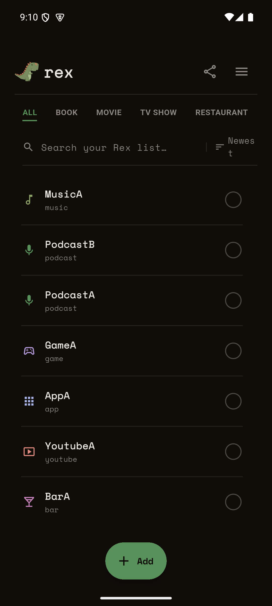
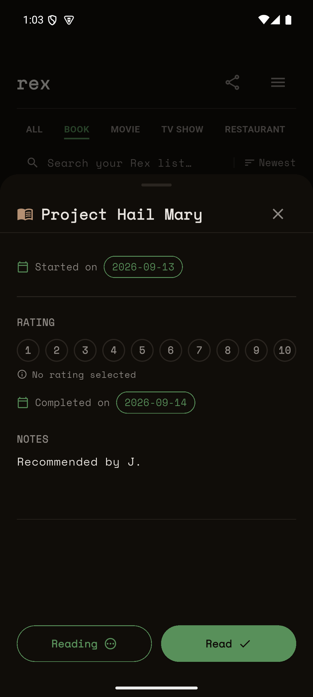
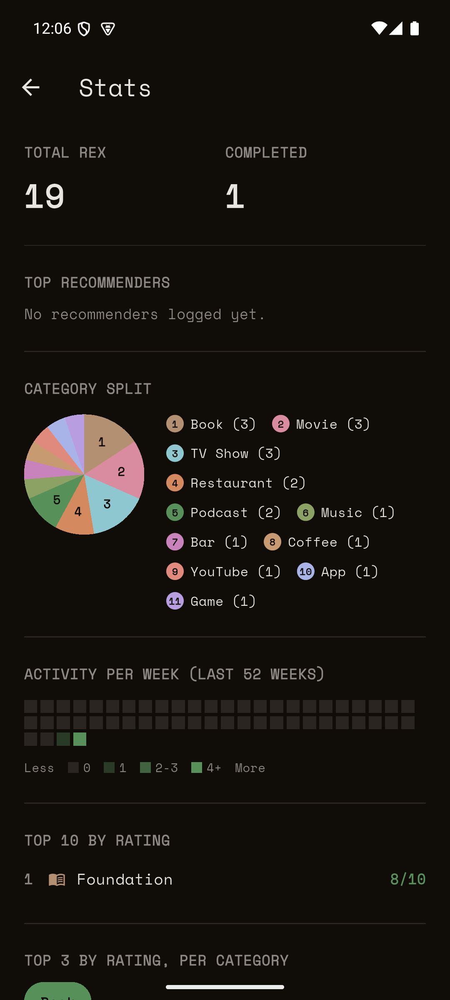

Stop losing track of what people tell you to check out.
Books, movies, shows, restaurants, and everything else — save each one in seconds, then actually find it again when you're ready. One list, no ceremony, nothing leaves your device.
Free, local-first, no account required.

Enough structure to be useful, none of the ceremony
Somewhere between a proper recommendation tracker and a notepad — everything you need to keep track, nothing you have to fill out.
Save it in seconds
A title and a category is all it takes. Add who recommended it, tags, notes, and category-specific details whenever you get around to it.
Track where you are
To try, in progress, or done — with the verb tailored to the category. Read a book, watch a movie, visit a restaurant.
Rate what you finish
Rate anything you complete, and see it reflected across search, sort, and stats.
Find things fast
Search your list by title, tags, or who recommended it! Filter by category, status, and rating. Sort by newest, oldest, A–Z, or highest rated.
Share a Rex with your friends
As a QR code, plain text, a shareable image card, or a
.rex file someone else can import straight into
their own list.
See your habits
A Stats screen breaks your list down by category and completion activity over time.
See it for yourself
Real screens from the app, not mockups.
Your whole list, at a glance

Mark it done, rate it, move on

See your habits break down by category
Not published yet — but on its way
rex is still under active development in a private repository, so there's no app store listing or download link yet. Check back soon, or keep an eye on this page.